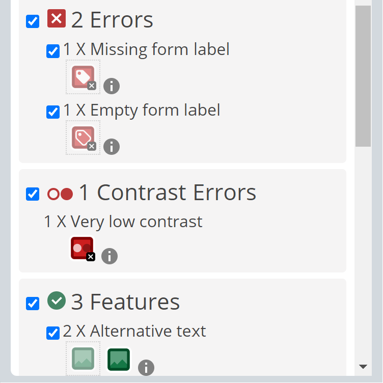
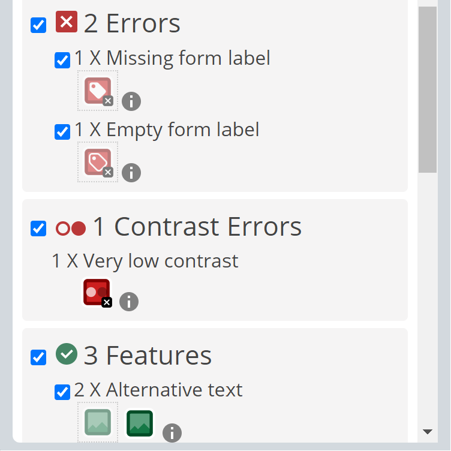

Accessibility
Accessibility is an important aspect to keep in mind when developing a website. It revolves around making your website “usable” for as many people as possible. To make sure our website meets the standards for accessibility, we conducted two different automated tests to get feedback on features to improve. Having no prior experience with automated website testing, we opted to use the programs recommended in obligatory assignment 2, wave.webaim.org and lighthouse. Automated testing can be a quick and easy way to optimize your website. Therefor, we elected to run tests on every page of our website. We have chosen to present the automated tests of climbing-wall.html due to it being our unique page with the most elements.
Choices made for universal design
To ensure our website was optimized for accessibility. We made well-planned choices we would like to elaborate on. Many of the final choices went through multiple iterations before reaching satisfaction. Firstly, we would like to emphasize the scaling of the website. It uses multiple media queries to scale both text and pictures to fit any screen regardless of the devices' viewport. We included changes in the grid layouts depending on viewport to ensure a great functional and visual experience. Secondly, when suitable, pictures scale by view width to cover the same proportion of any screen. All pictures used are all under 1 megabyte to reduce loading times. All pictures also contain well-describing alternative texts for screen readers. Furthermore, we opted for a simple design. Rather than focusing on a flashy website, we prioritized simplicity and functionality.
Choice of colours
Our colour choices for the background, text, navbar and footer was choosen to ensure great visual design. We also wanted to keep in mind the accessibility of colour-blind people. To ensure this, we ran a colour-blindness test of all our pages. We tested for all types of colour-blindness, and every page had contrasts between colours. This ensured great accessibility regardless of colour-blindness. For visual purposes, we have included screenshots of how climbing-wall.html looks with red/green colour-blindness and total absence of colour vision.
Lighthouse accessibility test for desktop
The Lighthouse test results for desktop view of climbing-wall.html shows a perfect score in performance, accessibility and best practices. The page received 90/100 in search engine optimization. To further improve the score, a description of the page's content should be summarized in meta name=”description”. Other potential improvements includes changing the picture formats from .png and .jpg to .WebP or .AVIF for faster downloads, and less data consumption.
Lighthouse accessibility test for mobile
The Lighthouse test results for the mobile view of climbing-wall.html shares many similarities with the desktop view. It also received a perfect score in performance, accessibility and best practices. The same improvements for desktop view could be implemented here to further optimize the website. Due to the viewport being smaller on mobile devices, an opportunity for improvement here regards image sizes. To enhance loading times, images could be sized down. This prevents the website having to load a bigger image, for CSS to then scale it down.
Wave accessibility test
The Wave accessibility test results for climbing-wall.html sorts elements of the website into different categories depending on the accessibility. After testing climbing-wall.html it received 2 errors, 1 contrast error, 0 alerts, 3 features, 9 structural elements and 0 ARIA. While an automated test can be helpful, machines can make mistakes, and a final human evaluation is always needed.
Explaination of the wave accessibility test
To elaborate on our “errors”. Both errors regard our navigation bar. “Missing form label” suggests adding a corresponding label to input id=”burger-toggle” type=”checkbox”. Due to it being an invisible button, there is no need for it. “Empty form label” occurs due to div class=”menu-button” being empty. By inserting text here, displays text not supposed to be visible. The contrast error occurs because the accessibility test loads the links for the navbar in the wrong position.
 
